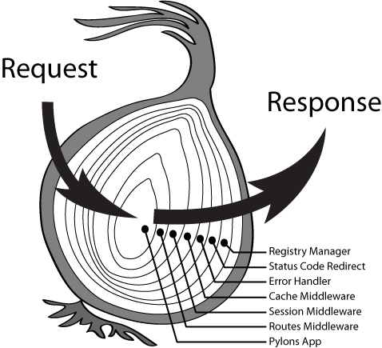
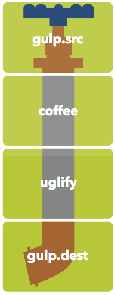

前端中的 Pipeline
Contents
计算机领域的 Pipeline 通常认为起源于 Unix。最初 Douglas Mcllroy 发现很多时候人们会将 shell 命令的输出传递给另外一个 shell 命令，因此就提出了 Pipeline 这一概念。后来同在贝尔实验室的大牛 Ken Thompson 在 1973 年将其实现，并使用 | 作为 pipe 的语法符号：
1 | $ ls -l | grep key | less |
如此优雅而又实用的 Pipeline 很快在各种操作系统中传播开来。
简单来说，Pipeline 一般具有如下特点：
- 各个子过程高内聚，专注于解决特定问题，Simple & Sharp
- 所有子过程具有一致的接口，例如从标准输入读取数据，正常结果输出到标准输出，异常结果输出到标准错误
- 能够通过一定形式将子过程组合起来解决复杂问题，例如 pipe
事实上，Pipeline 作为化整为零、去繁就简的重要手段，在前端中也有诸多应用。
Middleware Pipeline
NodeJS 框架 Express 在 1.0 版本中引入的 Middleware Pipeline 可以说为 Express 的流行居功至伟。透过下面简单几行代码，你就能感受到它散发的优雅气息：
1 | express() |
或许对于很多后来人来说，并不觉得这有什么精巧独到之处。但在 NodeJS 刚刚开始流行的那个蛮荒年代，大多数人写的还是流水账一样的过程式代码，好一些的会去整理一些工具函数以供抽象和复用：
1 | var srv = http.createServer(function (req, res) { |
相比之下，我们可以明显看出 Middleware 的几个优势：
- 代码简练、符合直觉。这是一个很重要的优势，因为代码的大部分生命周期内都是由程序员在维护，符合直觉的代码更容易被理解，在维护和定位问题时能够更有效率
- 合理的错误处理。任意 Middleware 出现问题，会越过后续所有普通 Middleware，直接由 Error Middleware 进行处理
事实上，还有一个更为重要的优势：标准化，为解决高层次问题提供了良好基础。这一点在迷思专栏的 再谈 API 的撰写 - 架构 这篇文章中得到了充分的诠释：通过将 API 执行路径上的各个环节抽象为中间件，然后再将中间件划分为通用逻辑（Pre-processing / Post-processing 等）和开发者需要关注的逻辑（Processing）等类别，并提供精细化的控制，最终得到一个流程清晰、功能完善、标准统一的 API 开发方案。
Middleware Pipeline 还有一个值得提及的独特之处：由于本质是是一种递归调用，因此整个调用过程更像是一个环环相扣的洋葱：

有兴趣了解其实现的同学，可以查看早期 Express 所使用的 connect 或者 Koa 的 compose。
Stream Pipeline
Stream 是 NodeJS 的一个核心功能，使得快速、高效处理数据成为了可能。例如读写大文件、处理高并发网络请求等。
建立在 Stream 之上的 Pipeline 非常自然而形象：数据像水流一样依次经过不同的处理流程，并最终得到期望的结果。下面这张 Gulp Cheet Sheet 中的图片能够形象地说明这一比喻：

1 | gulp.task('js', () => { |
凭借对 Stream 惟妙惟肖地运用，Gulp 在与配置为主的 Grunt 的竞争中迅速取得了领先优势。
另一个必须提及的例子是 substack 的 Browserify。作为 Stream Handbook 的作者，substack 对 Stream 的理解可谓深刻。于是在 Browserify 的实现中，我们可以看到下面这段核心逻辑：
1 | var pipeline = splicer.obj([ |
Browserify 的设计目标是将 CommonJS 模块组织的 JS 代码打包为可以在浏览器中运行的代码。实现这一目标所需要做的工作非常复杂，因此 Browserify 将其拆解为职责单一的多个子过程，例如分析依赖、拓扑排序、模块去重、打包合并等，并通过 Stream Pipeline 打通整个流程。这使得整个代码的架构异常清晰，对将来的维护和优化提供了良好基础。
点睛之笔在于，这个基于 labeled-stream-splicer 实现的 pipeline 还支持动态修改和扩展，而且不仅在内部实现中多处应用，还暴露为外部接口方便调用方进行定制。下面这个示例展示了将 deps 子过程输出结果的 source 属性改为大写的逻辑：
1 | pipeline.get('deps').push(through.obj(function (row, enc, next) { |
Browserify 众多的 Plugin 也大多利用了这一特性进行功能的增强。例如编译 TypeScript 的插件 Tsify 就是在 record 这一子过程之后插入一个遍历所有输入文件并进行编译的过程：
1 | b.pipeline.get('record').push(gatherEntryPoints()); |
毫不夸张的说，这是笔者从业以来所见到过最为优秀的设计，没有之一。在为一个使用 SeaJS 的团队设计组件化方案时，由于各种限制并不能直接应用 Browserify，因此就借（chao）鉴（xi）它的设计思路，完成了一个简单的组件打包工具 Tiler，并受用至今。
Promise Pipeline
由 Promise 组成的 Pipeline 与 Middleware Pipeline 有一些相通之处，例如都支持异步，错误处理也有异曲同工之妙。但毫无疑问 Promise 天生就在异步处理上更加得心应手，而且在函数式编程中具有一席之地，有人专门证明了下，Promise 属于 Monad（感兴趣的可以看下蝴蝶书的作者 Douglas Crockford 这个专门介绍 Monad 的讲座：Monads and Gonads）。有了理论上的保证，我们总是可以通过 Promise.resolve/Promise.reject 将非 promise 的值转换为 promise，而 promise.then/promise.catch 也总是返回一个新的 promise 从而方便链式调用。
此外，Promise 还有一个 Killer Feature：一旦有一个 promise 出现异常，那么会忽视后面所有的 then 直到第一个 catch。这样的错误处理机制和先前介绍的 Middleware Pipeline 非常类似，但却更为强大，例如 catch 后还可以在做必要的处理后再次返回一个正常的 promise，实现优雅降级等业务需求。
下面是笔者在实现 VPAID Player 时的核心逻辑：
1 | client.prototype.playAd = function (vastXMLString) { |
通过将播放广告的逻辑划分为构建返回值对象、加载第三方 JS、初始化广告等各个小而精的细分子过程，然后串联成 Promise Pipeline，并在最后做统一的错误处理，使得整体逻辑十分流畅清晰，提高了代码的可维护性。
Ramda Pipeline
最后，让我们再看一个函数式编程领域中的 Pipeline：Ramda Pipeline。
假设我们需要解决这个问题：将如下对象转换为 query 字符串
1 | const obj = { |
先来看下 Lodash 的解法：
1 | const objToQueryStr = (obj) => |
再来看下 Ramda 的解法：
1 | const objToQueryStr = R.pipe( |
可以看出，Ramda 在如下两个方面更加出色：
- 借助 currying 和数据后置，Ramda 并不需要显式创建新函数，代码更简练
- 顺序执行，容易理解（虽然很多函数式编程的童鞋们更喜欢 R.compose）
因此，在推崇函数式编程的团队中，Ramda 基本已成为必需品。
结语
前端中的 Pipeline 远不止本文介绍的这几种，比较知名的还有 RxJS 等等。从表面上看，它们每个都有着不同的目标问题域和因此而设计的特性，不过从本质上来讲，基本都遵循了 Unix Pipeline 的基本思路：化整为零 + 灵活组合。希望我们前端工程师们再接再厉，将这种精神发扬光大，更好地解决实际问题，不断推动前端的发展。
彩蛋
macOS 中的 workflow 定制工具 Automator 应用的图标是一个机器人，它的手上拿着的正是一根管子（Pipe）：
怎么样，非常的可爱吧~
参考
Author: Chun Shang
Link: https://springuper.github.io/fe-pipeline/
License: 知识共享署名-非商业性使用 4.0 国际许可协议